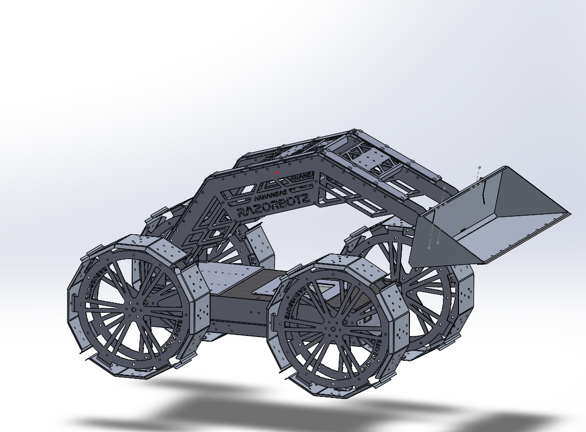

Robotics Systems | Distributed Autonomy | Embedded Platforms | Secure Communications
Building resilient software and communication systems for autonomous robotics
I design robotics software spanning distributed communication architectures, diagnostics and operator tooling, embedded integration, and simulation-driven validation.
As the Computer Systems and Electrical Lead for Arkansas Razorbotz, I build fault-tolerant systems for lunar excavation platforms. My background in cybersecurity and data privacy informs how I design robotics infrastructure: with a strong emphasis on secure communication, reliability, observability, and safe failure behavior.

Current Focus
Cyber-Resilient Robotics Systems
Building robotics architectures that remain controllable, debuggable, and secure across embedded hardware, distributed software, and real-world communication constraints.
Featured Systems
See all projects →Distributed Robotics Architecture
AEGIS Communication Protocol
A resilient state synchronization and failover architecture for dual-computer robotics platforms, designed to maintain control continuity and support secure, observable subsystem communication.

Telemetry & Operator Tooling
Diagnostics Platform
A modular telemetry and debugging platform for monitoring robot subsystems, validating message flow, and supporting field troubleshooting during development and integration.

Control & Monitoring Interface
Robotics Control GUI
A custom control interface integrating subsystem telemetry, networking controls, actuator visibility, and operator workflows into a single desktop application.

Simulation & Validation
Simulation & Perception Stack
Gazebo-based simulation and sensor testing workflows used to validate robot behavior, obstacle detection, localization, and autonomy pipelines before hardware deployment.
About Me
I am an engineer working at the intersection of robotics, embedded systems, distributed software, and cyber-resilient architecture. My work focuses on building robotic systems that remain observable, debuggable, and reliable in real operating environments.
Through my work with Arkansas Razorbotz, I design communication architectures, operator tools, simulation workflows, and embedded integrations for autonomous lunar excavation robots. I am especially interested in fault tolerance, diagnostics, secure communication, and system-level autonomy infrastructure.
My research background is in cybersecurity, privacy, and software assurance. That perspective influences how I design robotics systems: with a strong emphasis on message integrity, maintainability, safe failure behavior, and robust communication between distributed subsystems.
Core Focus Areas
- • Distributed robotics architectures
- • Embedded and mixed hardware-software systems
- • Diagnostics and operator tooling
- • Secure and resilient communications
- • Simulation-driven validation
- • Perception and autonomy infrastructure
Education
University of Arkansas
Doctor of Philosophy (Ph.D.) in Computer Science
Expected: Dec 2026GPA: 3.93
Research Focus: Evaluating LLMs and static analysis tools in identifying software vulnerabilities.
Master of Science in Computer Science
May 2024GPA: 3.90 | Certificate: Cybersecurity
Thesis: Inferring Vulnerabilities From Encrypted Network Traffic
Bachelor of Science in Computer Science
May 2021GPA: 3.60 | Minor: Mathematics
Highlights
- • Subject Matter Expert (SME) & Peer Reviewer for 5 technical conferences/journals
- • Computer Systems and Electrical Lead — NASA Lunabotics (Arkansas Razorbotz)
- • Graduate Research Assistant — Network and Data Privacy & Federated Learning
Relevant Coursework & Topics
- • Deep Learning & Machine Learning
- • Embedded, Network, & Advanced Network Security
- • Embedded Systems & Computer Architecture
- • Statistical Signal Processing
- • Robotics Autonomy, Simulation & Multi-Agent Systems
Publications & Research
InVue: Inferring Vulnerabilities from Encrypted Web Traffic
William Andrew Burroughs, Qinghua Li
IEEE International Conference on Communications, Control, and Computing Technologies for Smart Grids (2025)
POP-FA: Paillier and Order-Preserving Encryption-Based Facial Authentication
Yatish Dubasi, William Andrew Burroughs, Qinghua Li
IEEE Conference on Communications and Network Security (CNS) (2024)
LLM-Based Vulnerability Detection and Software Assurance
Evaluating the effectiveness of large language models in identifying software vulnerabilities across large datasets (Juliet, CVEfixes), comparing their performance and accuracy with traditional static analysis tools such as CodeQL and Semgrep.